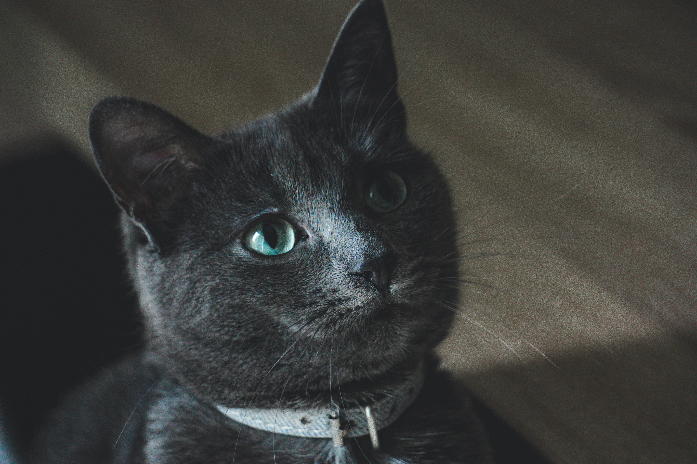
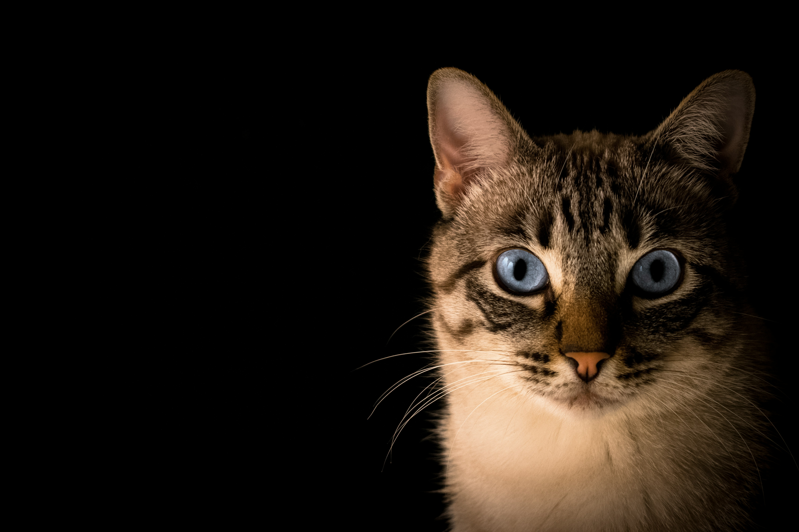
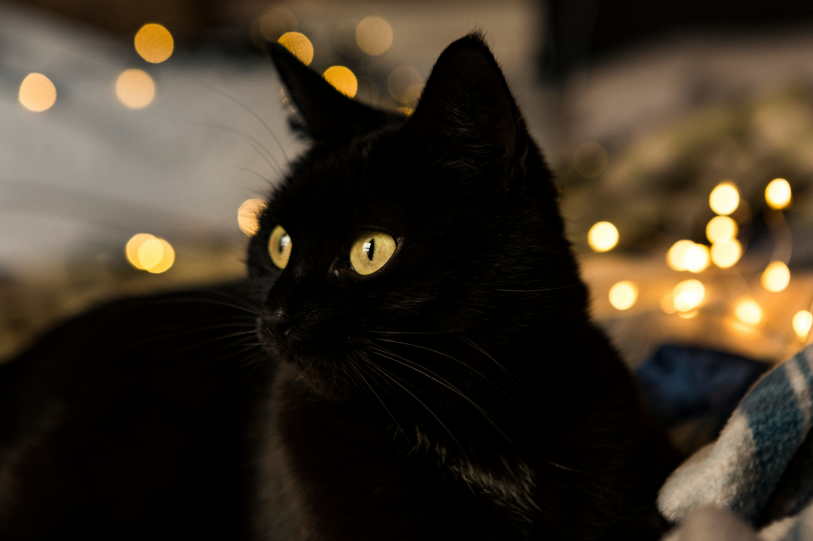
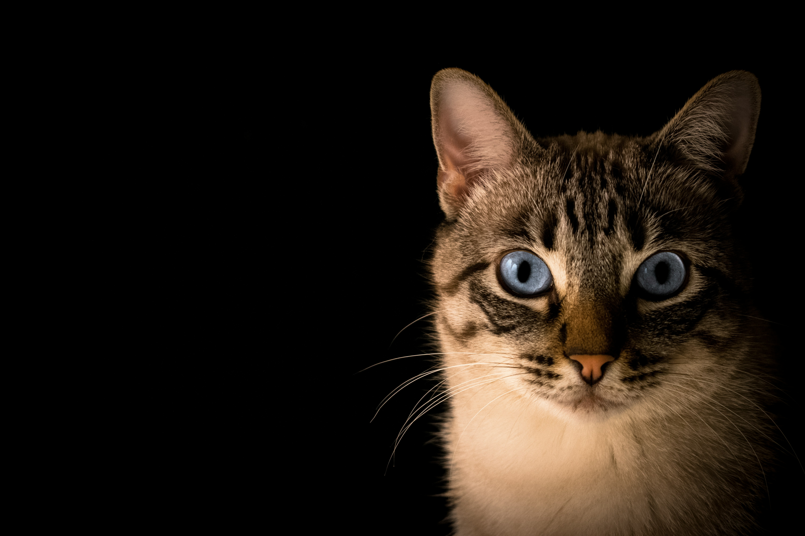
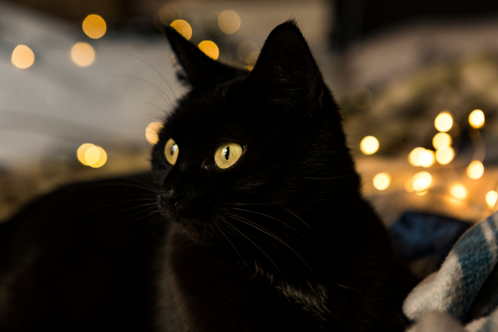
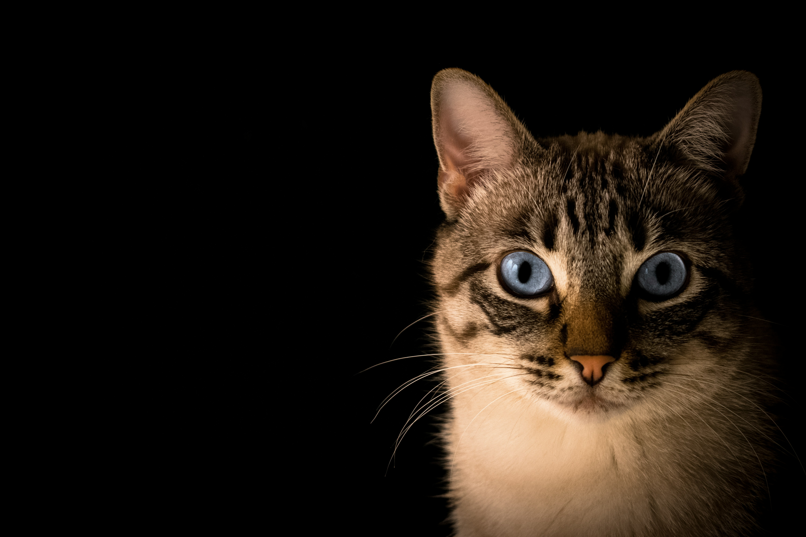
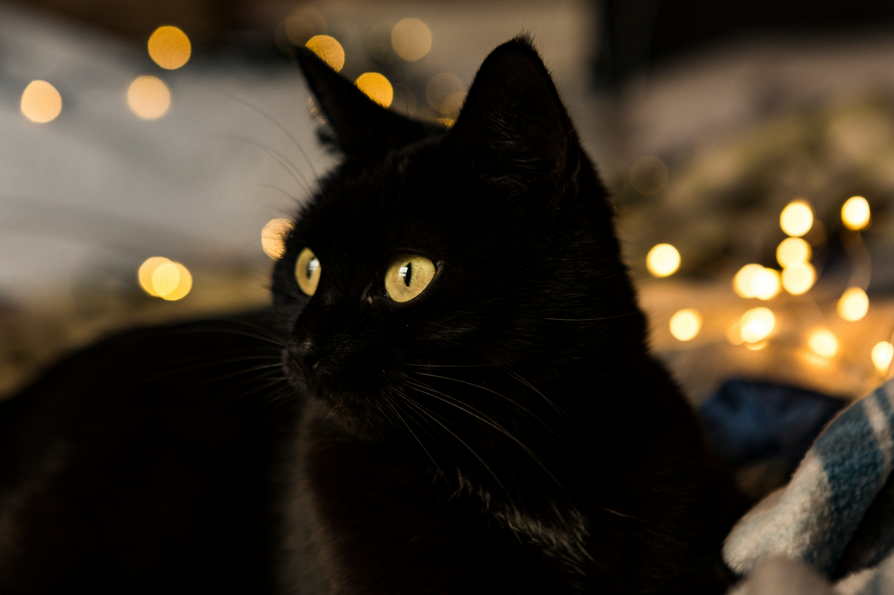

Visit our brand new café
Do cats, coffee and quality time spent together with loved ones sound like your cup of tea? Then a visit to our cat café is what you’re looking for! The Cat Lounge is a relaxing, calm and joyous place! It’s the home of friendly felines of various ages. Here you can enjoy a cup of coffee catching up with friends or have our delicious Afternoon Tea as the purrfect weekend treat!
Equal parts café and foster home, we offer you a place to catch up with friends after work, petting cats as you unwind. Or maybe you’ll have a morning coffee while reading the newspaper with a curious feline looking on next to you? Or, do you need a quiet place to study for your final exams with a purring cheerleader supporting you every step of the way?
Meet our lovely fur friends

 




